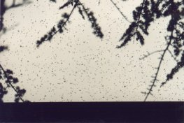
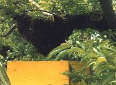

Con la sciamatura l'ape attua la propagazione della specie. Ogni anno, in primavera, l'attività delle api si intensifica a tal punto da essere chiamata "febbre sciamatoria". La colonia si divide e l'ape regina insieme a migliaia di api esce dall'alveare alla ricerca di un nuovo nido nel quale rifondare una nuova famiglia.
Generalmente, prima di trovare un posto adatto, l'ape regina, essendo poco allenata al volo, si ferma nelle vicinanze dell'apiario dal quale è uscita, dando il tempo all'apicoltore di riprendere lo sciame inserendolo in una nuova arnia.